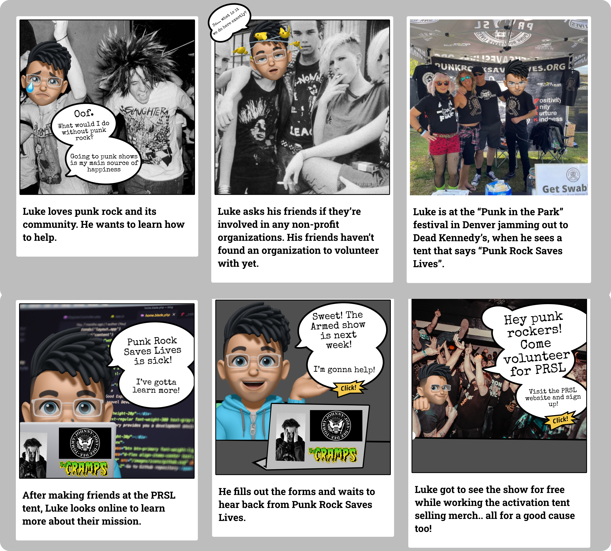
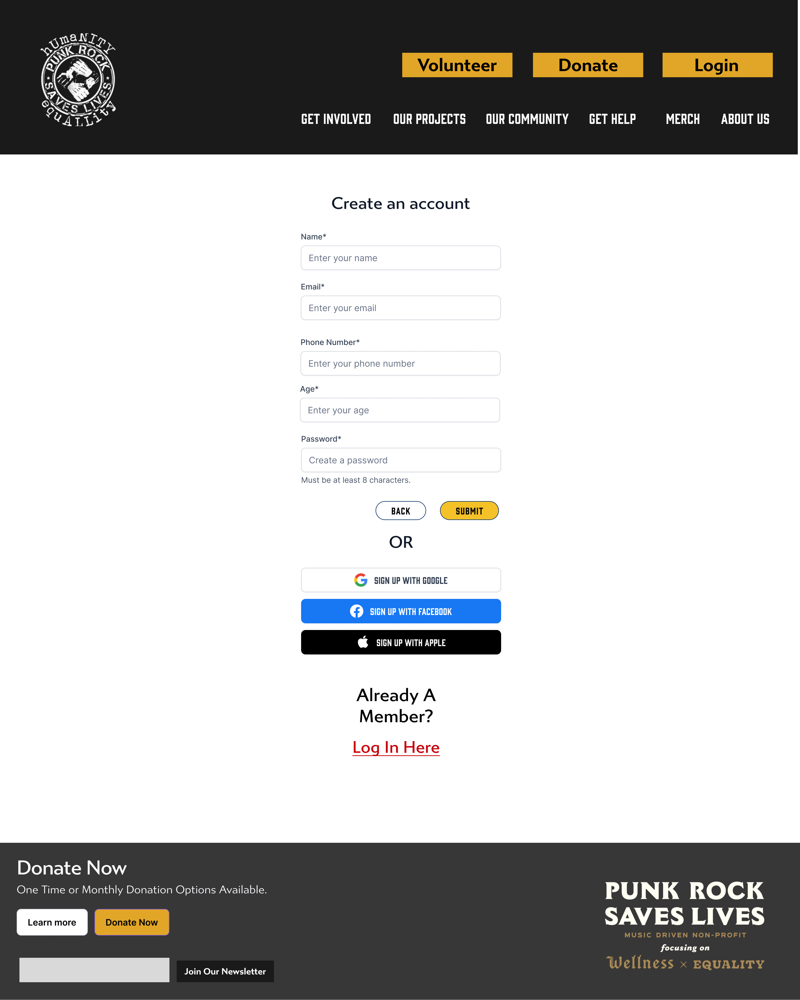
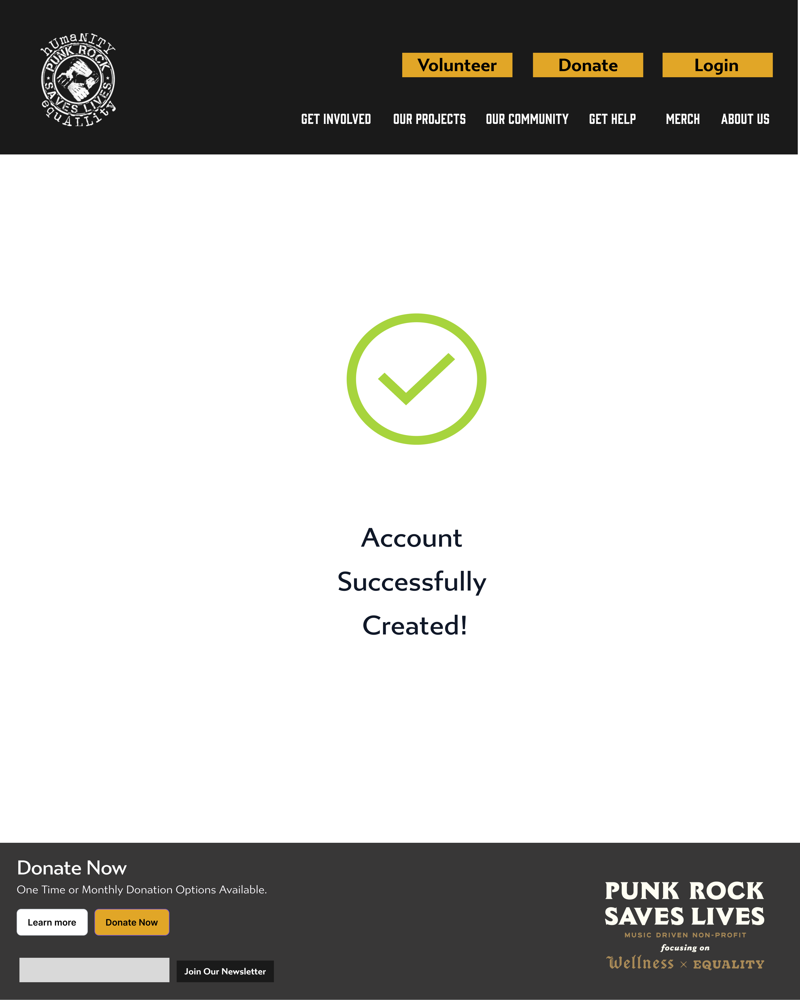

Case Overview
- Project Type: Responsive Web Design
- Timeline: 3 Week Sprint
- My Roles: UX Researcher, UX Designer, UI Designer
- My Teammates: Corbin Grainger, Laine Stewart
- Tools Used: Figma, Google Suite, Trello
The Problem
Punk Rock Saves Lives contributes to many worthwhile causes and is dedicated to helping their community. Their website, however, is an unintended hurdle to prospective volunteers and donors due to its poor design and layout.
The Solution
Redesign the website with a more modern and organized navigation and layout, with an emphasis on driving traffic towards more clearly presented volunteer opportunities.
The Research
The team's initial research was conducted through a combination of: an interview with the Executive Director of the organization, Tina Rushing, a Google Forms survey, and user testing done on the existing website.
The interview with Tina was extremely helpful; she informed us that she wanted a primary goal of any redesign to be creating more volunteers and donations.
User testing conducted by the whole team revealed issues with basic navigation and layout of the site, specifically more clearly displayed calls to action for volunteer opportunities, confirming Tina’s insights. Users also disliked getting redirected to a separate site to select events to volunteer for.

I put together a Google Forms survey to learn what information would influence users to volunteer for an event. We had 18 respondents, and found that time/date/location and the event’s cause were the two most important factors, so we emphasized those details on our home and events pages.
User Persona
Meet Luke Reynolds. He loves listening to punk rock and would like to volunteer in his community with like-minded individuals to contribute to a better society where basic needs are met for all.

User Flow & Storyboard
The goal of the flow was to present Luke with as straightfoward a method to find events to volunteer for. The team's initial idea was to utilize a filterable calendar to find events that could then be signed up for and saved to a profile. The profile would then serve as a hub to remind Luke what he's volunteered for and to ensure PRSL could maintain contact with prospective volunteers.

The initial flow incorporated a calendar, account creation process, and profile page.
Luke went to a punk festival and saw the PRSL tent. He's gone online to the updated website and easily finds a volunteer opportunity
Updated Sitemap & UI Wireframing
We held a brainstorming session and organized our ideas by priority and feasibility, resulting in a simplified navigation. I took the lead on this sitemap and navigation redesign, removing many redundancies in the navigation bar and dropdown menus, and including the call to action buttons for volunteering and donations in the header.

We built our wireframes using our newly established flow and navigation. This included the event calendar and account creation pages.

Design Style

Drawing inspiration from the existing site for images and iconography, and classic punk rock concert posters for our color palatte and typography, the team put together a UI style tile.

Usability Testing
After testing, we found that users thought the updated navigation was easier to utilize, but disliked the experience of creating an account and giving personal information without knowing why, and found some of the copy on these pages impersonal, which didn't feel very punk rock. The tests also assessed the usability of utilizing a full events calendar, making clear that it was simpler to display events in list form.
Realizing our initial flow was flawed, the team rose to the challenge by quickly collaborating on redesigning the volunteer process pages. We also reached out to Tina to get her input on the color scheme: she informed us that when PRSL makes merchandise or posters in pink, they see an increase in sales and engagement, so Punk Pink it is!
Before
 After


Final RWD Prototypes
Informed by that round of testing and some final input from Tina, I linked our completed homepage to our redesigned event details and sign up pages, maintaining a unified style throughout the flow. I designed an interaction where clicking on an event would slide a "More Details" card into the page, allowing the user to learn basic information before committing to a sign up process. We also rewrote some of the sign up copy to be more warm and conversational to encourage more volunteering.
Content from the desktop version was then transposed to a mobile version to allow for responsive web design.


The Result
My team chose Punk Rock Saves Lives because we’re all music lovers. PRSL’s mission unites punk music lovers with volunteer opportunities to do good in their communities; we facilitated that mission through intuitive design and an engaging experience. Users are now presented with a modern homepage that removes obstacles to getting into a simple event selection and sign up flow for volunteering.
The team intends on presenting to PRSL after our bootcamp and moving forward with a complete overhaul of the site’s other pages using our established heuristic and design patterns. We also discussed implementing a recurring volunteer newsletter opt in, to further increase return volunteers and preventing the account creation blocker.
Our team all had strong backgrounds in graphic design or branding and marketing, so there were some equally strong opinions on visual design choices. Ultimately, we made good compromises and concessions to one another, trusting each other’s strengths, and letting the research break any stalemates. This reinforced the importance of collaboration; in kitchens and in design, good teamwork leads to greater results than working solo.